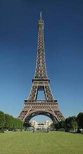
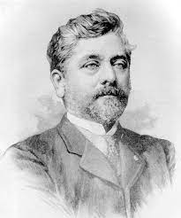

Frankrijk
Eiffel toren
De Eiffeltoren (Frans: la tour Eiffel) is een monument in Parijs en een van bekendste en meest bezochte bezienswaardigheden van Frankrijk. Hij staat aan de linkeroever van de Seine in het 7e arrondissement van Parijs.
De Eiffeltoren is hét symbool van Parijs en wordt door velen gezien als een van de Niet klassieke wereldwonderen. De toren ontving tussen 2011 en 2017 jaarlijks meer dan zes miljoen bezoekers en is daarmee het meest bezochte monument ter wereld waar een toegangskaartje voor gekocht moet worden. Op 28 november 2002 verwelkomde de Eiffeltoren zijn 200 miljoenste gast.
De toren is ontworpen door de ingenieurs Maurice Koechlin en Émile Nouguier, twee medewerkers van Gustave Eiffel, en werd gebouwd ter gelegenheid van de wereldtentoonstelling van 1889 in Parijs.
Op het eerste platform bevindt zich een expositie over de Eiffeltoren met foto's, schilderijen en informatie. Met de lift is het mogelijk naar de top van de Eiffeltoren te gaan (de trap is boven het tweede platform niet publiek toegankelijk). Informatiepanelen geven aan welke gebouwen te zien zijn vanaf de Eiffeltoren.
De Eiffeltoren is 317 meter hoog tot aan de top van de vlaggenstok, zonder de televisieantennes mee te rekenen. Met de op 15 maart 2022 geplaatste DAB+-antennes is de toren 330 meter hoog. Afhankelijk van de omgevingstemperatuur kan de toren 15 cm in hoogte veranderen door het uitzetten of krimpen van het metaal. De toren heeft vier poten; op verschillende niveaus bevinden zich platforms. De toren weegt 7300 ton (exclusief de fundering). Na de bouw was de Eiffeltoren 's werelds hoogste toren en hij bleef, afgezien van televisietorens, 126 jaar lang de hoogste toren van Europa.
De Eiffeltoren werd tussen 1887 en 1889 gebouwd ter gelegenheid van de wereldtentoonstelling van 1889; de Eiffeltoren zou de monumentale toegang tot de tentoonstelling worden. Het jaar 1889 was niet toevallig uitgekozen: het was de honderdste verjaardag van de Franse Revolutie.
In 1884 werd een wedstrijd georganiseerd door het ministerie van Handel en Industrie om een 300 meter hoge toren te bouwen op het Champ-de-Mars. Meer dan 700 dossiers werden ingediend en het project van de firma Eiffel werd op 12 juni 1886 unaniem door de jury gekozen, enerzijds omwille van de originaliteit van het project, anderzijds omdat Eiffel in het verleden had bewezen binnen tijd en budget te kunnen werken.